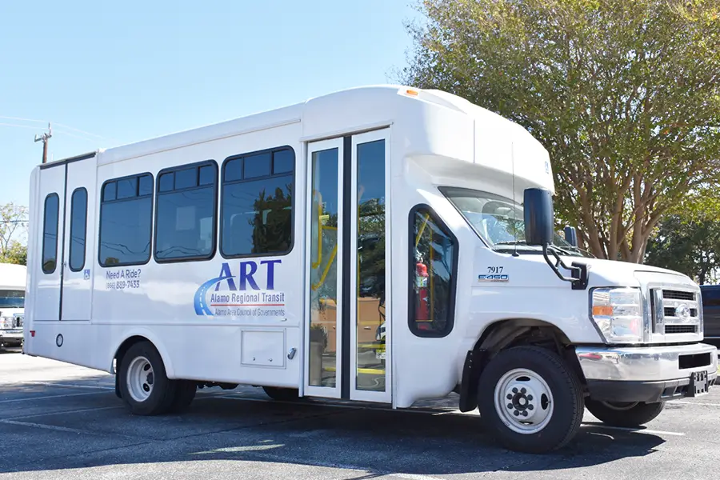
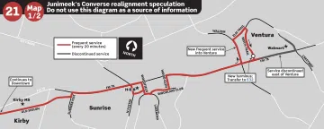
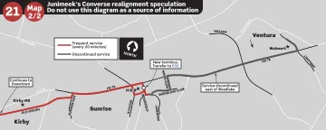
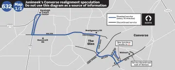
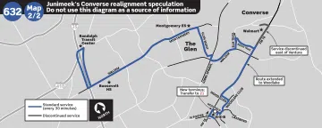

Click any of the links below to jump to that section of this page.
| Transit in Converse Today | What do VIA's services look like within Converse's city limits today? | |
| The Ballot | A summary of what voters will see on the ballot | |
| Reasoning | What is the Point of this Election? | |
| The Plan | What will happen if the vote to discontinue VIA's services passes? | |
| The Catch | One potential issue that may have the potential to sway voters away from discontinuing VIA services | |
Currently, these are the services that VIA provides within Converse's city limits:
CITY OF CONVERSE – PROPOSITION
FOR or AGAINST,
"Shall the VIA San Antonio Metropolitan Transit Authority Service be discontinued in the City of Converse, Texas?"
If citizens vote FOR:
|
If citizens vote AGAINST:
|
Everywhere where VIA exists, approximately 75% of their operational funding is provided by sales taxes. Naturally, this means that the city of Converse participates in funding VIA through a half-cent sales tax. As such, this election is essentially Converse leaders asking their citizens if they believe that the sales tax that currently funds VIA would be better spent on funding local projects.
As of September 23, 2026, only the City of Converse has publicly released plans for what will happen upon the discontinuation of VIA's services; it is currently unknown what VIA would do in response to a "for" vote.

If voters approve of discontinuing VIA's services, then Converse proposes replacing all of VIA's services with Alamo Regional Transit (or ART, not to be confused with VIA's Advanced Rapid Transit system), operated by the Alamo Area Council of Governments (or AACOG). AACOG already operates ART in several other regions surrounding Bexar County.
Within Converse, ART would operate as a microtransit service (which AACOG calls "Advanced Demand Response"), meaning that it'll operate curb-to-curb to requested pickup and drop-off locations within Converse's city limits. ART would also provide a direct transfer to the VIA Randolph Transit Center facility near the Fratt interchange. Transportation would also be provided free-of-charge.
VIA, meanwhile, has not publicly provided any information as to what will happen to the existing routes that operate in Converse. As such, we can only speculate on what will happen to the 21, 502, and 632 buses. There is, however, one thing that is certain to happen: all services to the Walmart at Crestway & FM 78 will be discontinued. This is because the stop is on Crestway Drive, which is within Converse's city limits. While VIA could technically get around this by placing a stop in the Walmart's parking lot (since the parking lot is private property and thus the City of Converse has limited control over it), a recent service change on the north side (where a stop was moved out of a Walmart parking lot and onto the 281 access road due to operational safety concerns) suggests that VIA is unlikely to use this option. As such, it is significantly more likely that VIA will realign all the routes in a way that avoids Converse altogether.
Below, you can see my guesses as to how the routes could be realigned.
Only a small portion of Route 21 operates within Converse's city limits. There are two different ways in which it could be realigned, both of which are shown in the maps below.
One possibility is that the eastern terminus would only move slightly to be on Beech Trail Drive, and the bus would reach it via Walzem and Elm Trail Drive. Another possibility is that the terminus could be truncated to the H-E-B at FM 78 & Foster Road. The 21 bus already goes around the H-E-B in an odd boxy pattern, and so it would be simple for it to loop back towards Foster Road via Heritage Lake, with the discontinued service further to the east being provided by a new extension of Route 632 (more info below).


As the name implies, a significant portion of Route 502 operates within Converse's city limits. Because the portion within Converse is at the eastern end of this route, it's likely that VIA would realign it to turn right at Kitty Hawk Road and loop back to O'Connor via New World Drive.
Only a small portion of Route 632 operates within Converse's city limits. There are two different ways in which it could be realigned, both of which are shown in the maps below.
One possibility is that the eastern terminus would only move slightly to be on Beech Trail Drive near FM 78, and the bus would turn around to head back to Randolph via Walzem. Another possibility is that the terminus could be extended to the H-E-B at FM 78 & Foster Road via FM 78 to allow for an easy transfer to Route 21.


The City of Converse wants to reallocate the half-cent sales tax for local municipal needs, including park improvements, street maintenance, and first responder improvements, as well as funding the ART service. However, there is one issue with this: the money will not be made available immediately.
For reasons that I will not even attempt to explain here as I cannot speak legalese, the half-cent sales tax will continue to go to VIA even if their services are discontinued. Under Texas state law (specifically, Texas Transportation Code Chapter 451 Section 611), Converse will owe VIA a financial obligation totaling approximately $13 million. Considering the current population growth patterns within Converse, VIA estimates that it would take around 7 years before the obligation is completely paid off.
After the obligation is paid off, however, Converse would have an additional $1.7 million to go towards local needs every year. It may take almost a decade to get there, but as the old saying goes, good things come to those who wait.
Is there a right or wrong decision here? It's impossible to say.
Only time will tell.